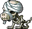

Lv. 47 · #4230126
머미독
에레고스의 어두운 힘에 의해서 살아 움직이는 미라 형태의 개 유골이다. 오래 전 샤레니안의 군사들이 키우던 군견이라고 알려져있다. 세월이 오래 흘렀기 떄문에 몸에 감고있던 붕대는 지저분하게 변해버렸다.
스탯
레벨 47- HP
- 2,750
- MP
- 0
- EXP
- 117
- 넉백 가능 데미지
- 100+
- 물리 데미지
- 145
- 마법 데미지
- 0
- 물리 방어력
- 175
- 마법 방어력
- 195
- 속도
- 20
- 47레벨 에서의 필요 명중
- 65.988
- 메소
- 352.5
- 속성관계
- 성속성약점
- 체경비
- 23.50
- 형태
- 불사형
출현 지역
출현 맵 3개맵 이름을 누르면 메이플노트의 맵 정보가 열립니다.
드롭 테이블
전체 31개| 아이템 | 아이템 ID | 드롭 확률 |
|---|---|---|
| 더러운 붕대 | 4000205 | 50% |
| 하얀 포션 | 2000002 | 1% |
| 파란 포션 | 2000003 | 1% |
| 활전용 화살 | 2060000 | 0.8% |
| 석궁전용 화살 | 2061000 | 0.8% |
| 에메랄드의 원석 | 4020003 | 0.3% |
| 아다만티움의 원석 | 4010003 | 0.3% |
| 토파즈의 원석 | 4020006 | 0.2% |
| 엘릭서 | 2000004 | 0.1% |
| 소환의 돌 | 4006001 | 0.08% |
| 마법의 가루(노랑) | 4007004 | 0.03% |
| 마법의 가루(검정) | 4007007 | 0.03% |
| 브라운 피에르타 | 1041082 | 0.01% |
| 브라운 피에뜨 바지 | 1060069 | 0.01% |
| 활 제작의 촉진제 | 4130012 | 0.01% |
| 창 제작의 촉진제 | 4130008 | 0.01% |
| 한손둔기 제작의 촉진제 | 4130004 | 0.01% |
| 황진일갑주 바지 | 1060075 | 0.01% |
| 홍진월갑주 | 1041084 | 0.01% |
| 화이트 칼라스 | 1050048 | 0.008% |
| 블루 칼라프 | 1051032 | 0.008% |
| 미스릴 브리스트 | 1082010 | 0.008% |
| 황월 장갑 | 1082066 | 0.008% |
| 상의 행운 주문서 60% | 2040425 | 0.007% |
| 백의 주문서 1% | 2049000 | 0.007% |
| 브론즈 클랜치 | 1082059 | 0.007% |
| 오커 가너 | 1082089 | 0.007% |
| 브론즈 파우 | 1082092 | 0.007% |
| 두손둔기 공격력 주문서 60% | 2044201 | 0.006% |
| 망토 힘 주문서 10% | 2041014 | 0.006% |
| 브라운레더 오션 햇 | 1002631 | 0.0012% |
조건에 맞는 드롭 아이템이 없습니다.
확률은 메이플노트에 게시된 값입니다. 아이템 이름을 누르면 원본 아이템 정보가 열립니다. 과거 버전 데이터이므로 실제 메이플랜드와 다를 수 있습니다.